Code
library(ggplot2) #绘图
library(dplyr) #数据分析
library(RColorBrewer) #调用调色板library(ggplot2) #绘图
library(dplyr) #数据分析
library(RColorBrewer) #调用调色板library(ggplot2)
mytheme <- theme(
text = element_text(size = 16,
family = "STKaiti"),
axis.title = element_text(size = 20)
)load("../Output/chapter4.RData")ggplot(data3_1,aes(x=性别))+
geom_bar()+
labs(y="人数")+
mytheme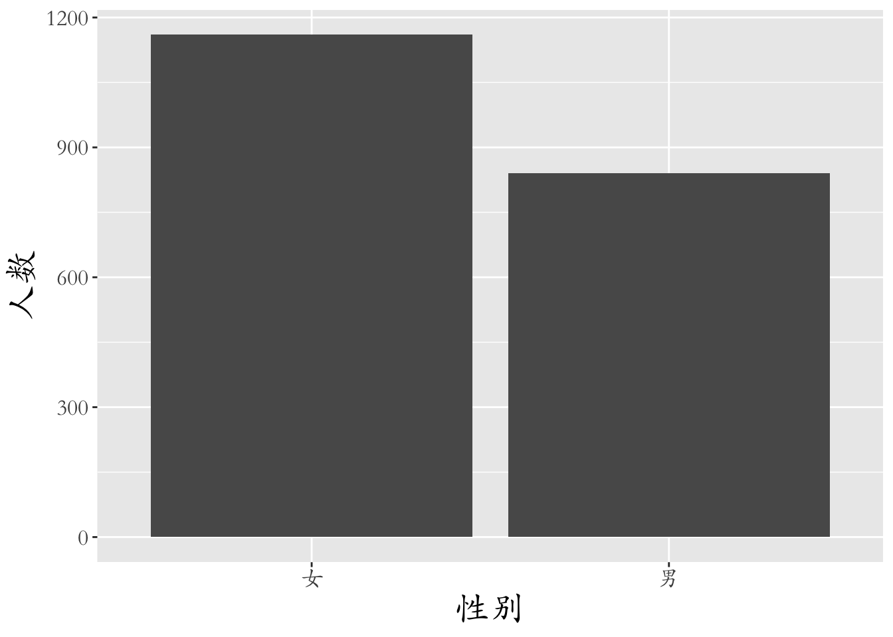
ggplot(data3_1,aes(x=性别,fill=性别))+
geom_bar()+
labs(y="人数")+
mytheme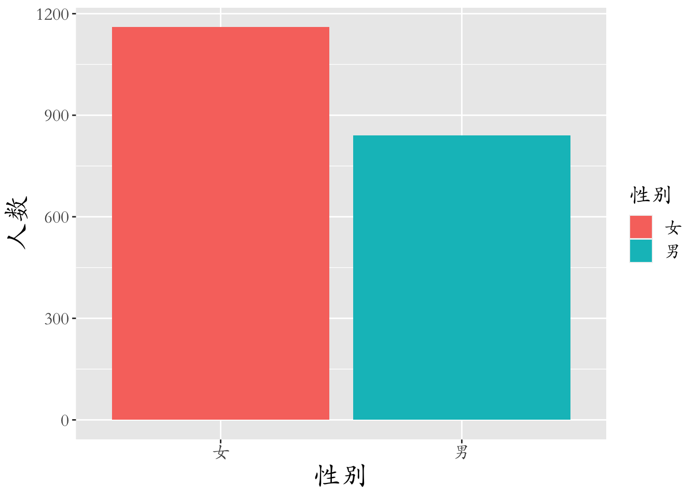
ggplot(data3_1,aes(x=性别,fill=性别))+
geom_bar()+
scale_fill_manual(values = c("black","grey"))+
labs(y="人数")+
mytheme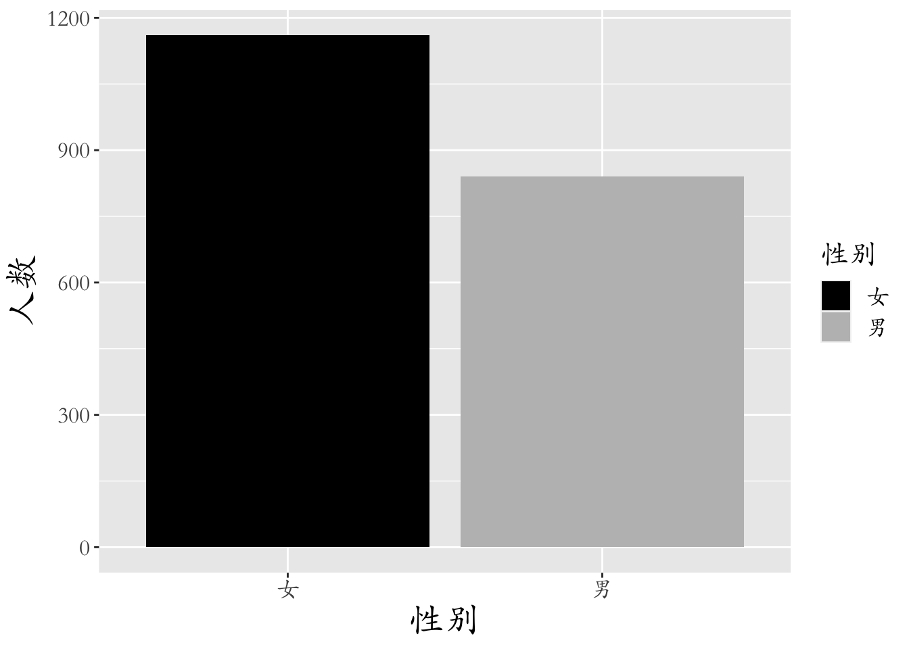
ggplot(data3_1,aes(x=满意度,fill=满意度))+
geom_bar()+
scale_fill_brewer(palette = "Set1")+
labs(y="人数")+
mytheme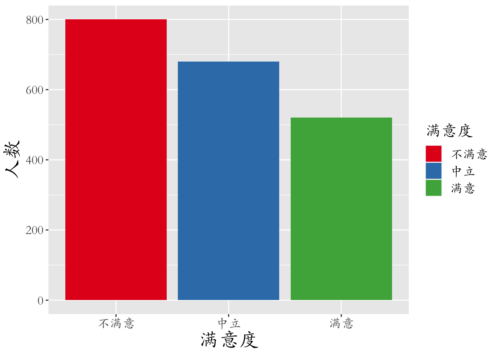
ggplot(data3_1,aes(x=满意度,fill=满意度))+
geom_bar()+
scale_x_discrete(limits=c("满意","中立","不满意"))+
labs(y="人数")+
mytheme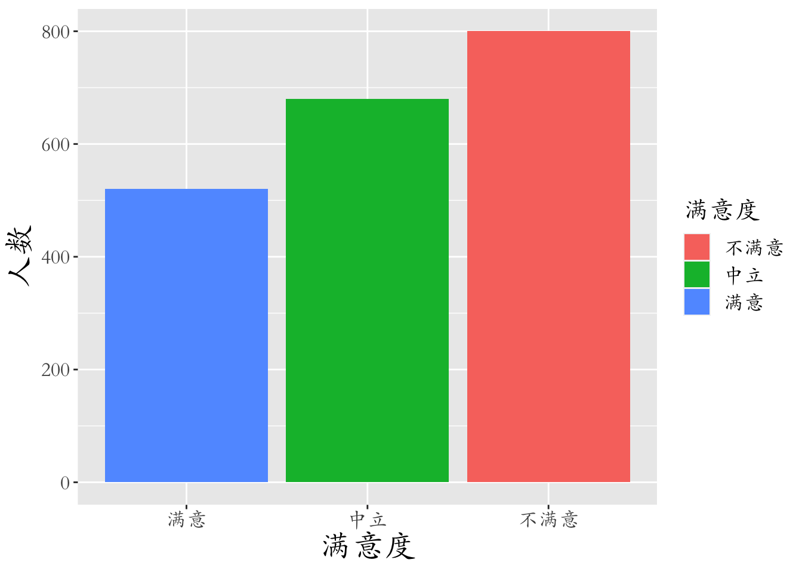
ggplot(data3_1,aes(x=满意度,fill=满意度))+
geom_bar()+
stat_count(aes(label=after_stat(count)),
geom = "text",vjust=-0.5)+
labs(y="人数")+
mytheme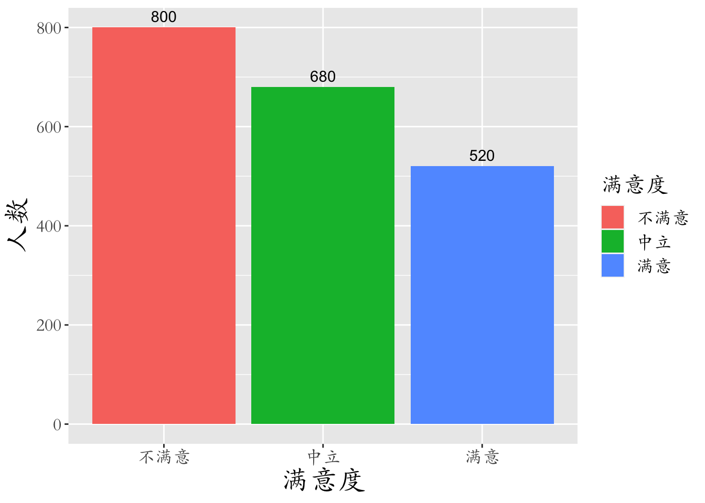
df1 <- data3_1 %>% select(满意度) %>%
table() %>% as.data.frame()
df1$percent <- df1$Freq/sum(df1$Freq)
head(df1) 满意度 Freq percent
1 不满意 800 0.40
2 中立 680 0.34
3 满意 520 0.26df1 %>% ggplot(aes(x=满意度,y=Freq))+
geom_bar(stat = "identity",width = 0.8,
fill=brewer.pal(3,"Set2"))+
geom_text(aes(label=paste0(percent*100,"%")),
vjust=-0.5)+
labs(y="人数",title = "添加百分比标签")+
mytheme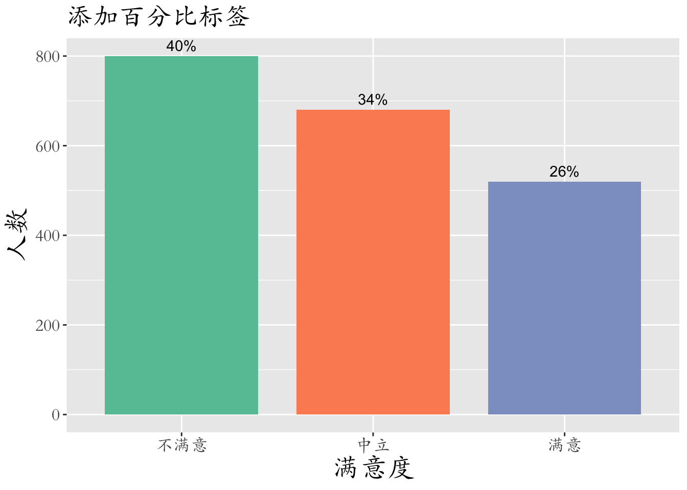
df2 <- data3_2 %>% select(支出项目,北京) %>%
arrange(desc(北京)) #降序排列
# 将支出项目变为有序因子
df2$支出项目 <- factor(df2$支出项目,ordered = T,
levels = df2$支出项目)简单条形图
ggplot(df2)+
geom_col(aes(x=支出项目,y=北京,fill=支出项目))+
scale_fill_brewer(palette = "Reds",direction = -1)+
labs(y="支出金额")+mytheme+
theme(axis.text = element_text(size = 8,angle = 45))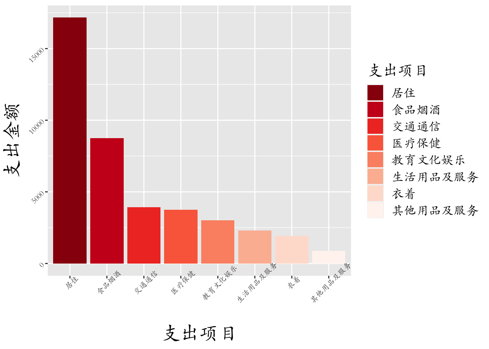
累积百分比曲线
df2$percent <- round(cumsum(df2$北京)/sum(df2$北京),4)*100
ggplot(df2,aes(x=as.numeric(支出项目),y=percent))+
geom_line()+
geom_point(shape=23,fill="white")+
labs(x="支出项目",y="百分比(%)")+
mytheme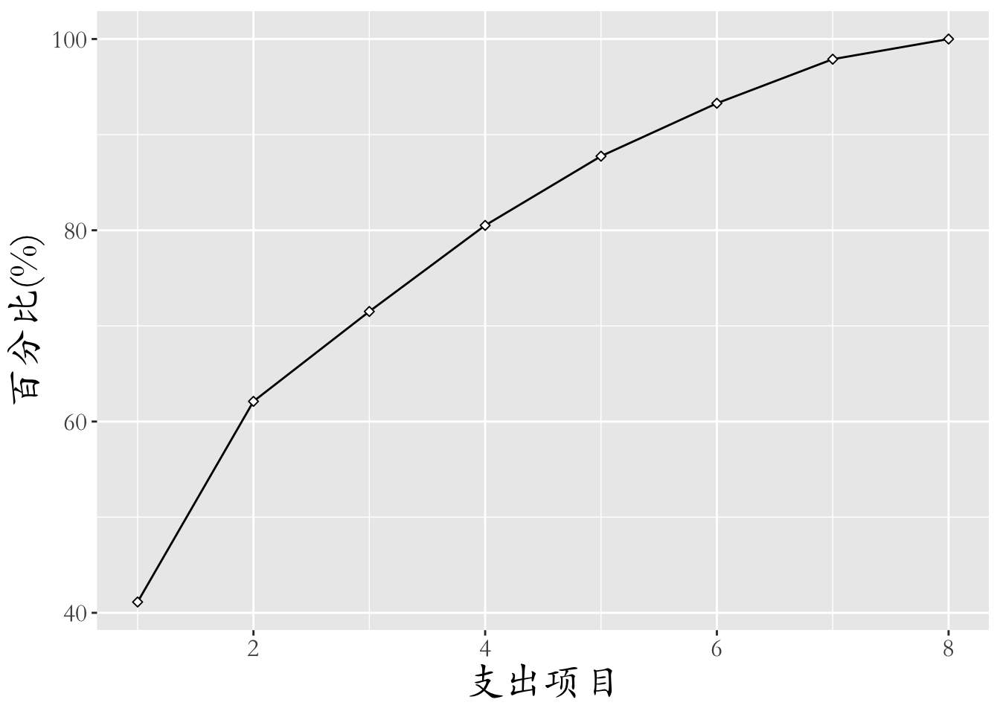
见图 1
magnif <- max(df2$北京)/100
ggplot(df2)+
geom_col(aes(x=支出项目,y=北京,fill=支出项目))+
scale_fill_brewer(palette = "Reds",direction = -1)+
labs(y="支出金额")+
geom_line(aes(x=as.numeric(支出项目),y=percent*magnif))+
geom_point(aes(x=as.numeric(支出项目),y=percent*magnif))+
scale_y_continuous(sec.axis = sec_axis(~./magnif))+
annotate("text",x=8.3,y=10000,label="百分比(%)",
angle=90,family="STKaiti")+
annotate("text",x=5,y=13500,
label="累积百分比曲线",family="STKaiti")+
labs(x="支出项目",y="支出金额\n(元)")+
mytheme+
theme(axis.text = element_text(size = 8,angle = 45))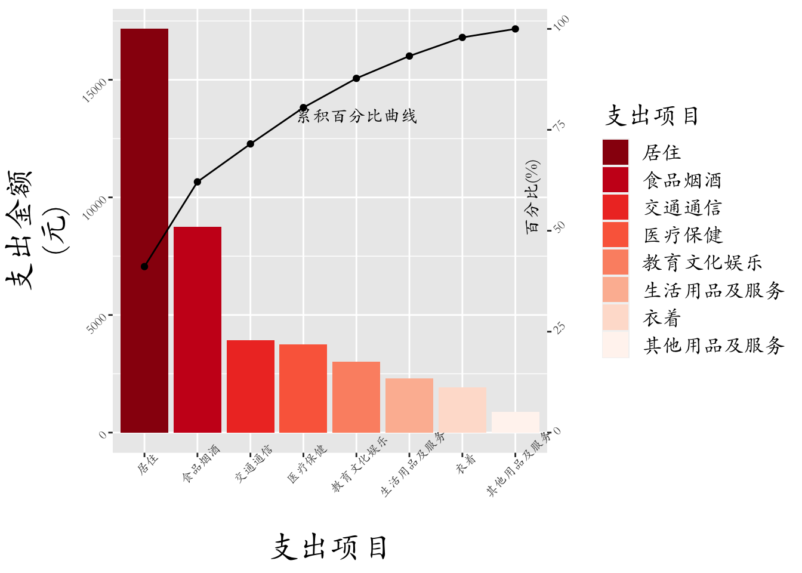
见图 2
ggplot(data3_1,aes(x=满意度,fill=网购原因))+
geom_bar()+
stat_count(aes(label=after_stat(count)),
geom = "text",
position = position_stack(0.5))+
labs(y="人数")+mytheme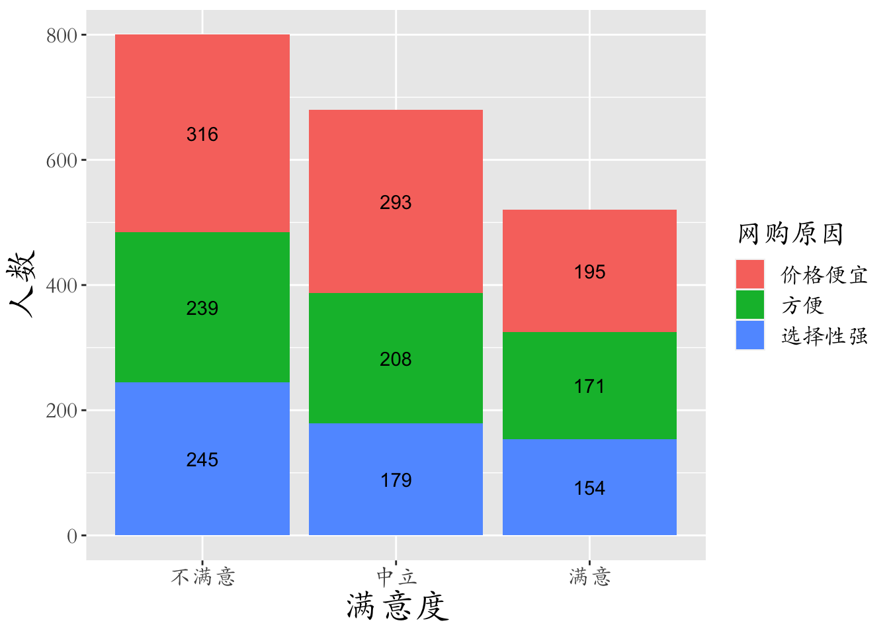
见图 3
ggplot(data3_1,aes(x=满意度,fill=网购原因))+
geom_bar(position = "dodge")+
stat_count(aes(label=after_stat(count)),
geom = "text",
position = position_dodge(0.9),
vjust=-0.5)+
labs(y="人数")+mytheme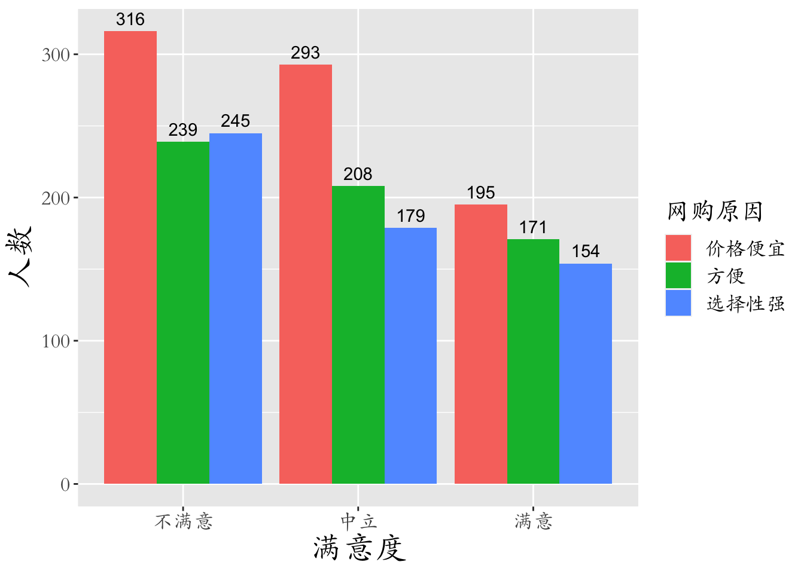
library(ggiraphExtra)ggSpine(data3_1,aes(x=满意度,fill=网购原因))+
mytheme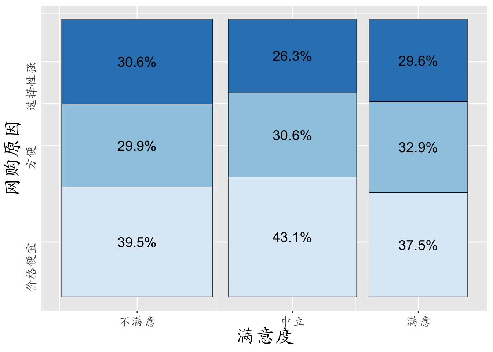
ggSpine(data3_1,aes(x=满意度,fill=网购原因),
position = "dodge")+
mytheme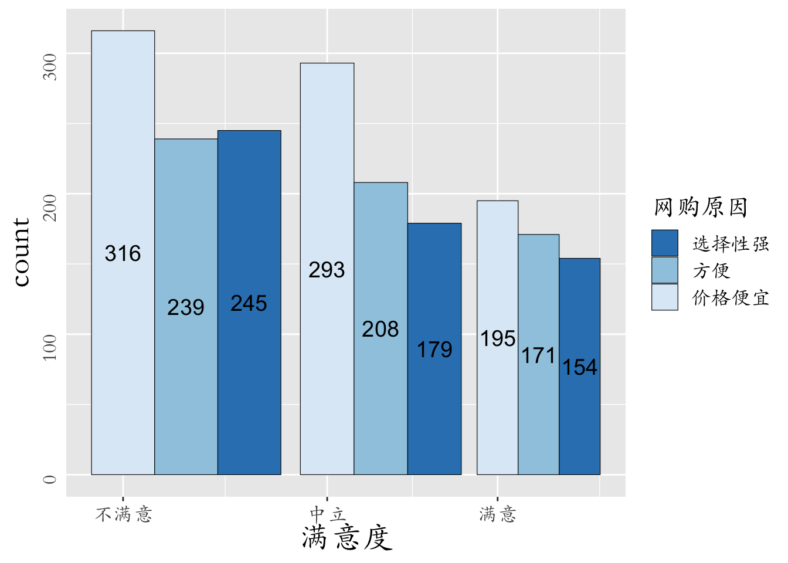
见图 4
library(reshape2)计算按地区分组的百分比
df3 <- data3_2 %>% melt(id.vars = "支出项目",
variable.name = "地区",
value.name = "支出金额") %>%
group_by(地区) %>%
mutate(percent=round(支出金额/sum(支出金额),4)*100)ggplot(df3,aes(x=地区,y=percent,fill=支出项目))+
geom_bar(stat = "identity")+
scale_fill_brewer(palette = "Blues")+
labs(y="百分比(%)")+mytheme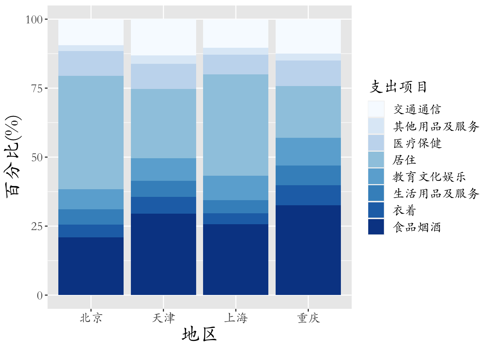
data2_1 <- read.csv("../Input/classdata/mydata/chap02/data2_1.csv")df4 <- data2_1 %>% melt(id.vars = c("性别","专业"),
variable.name = "课程",
value.name = "分数") %>%
group_by(课程) %>%
mutate(mean=mean(分数),
sd=sd(分数),
n=length(分数),
sem=sd(分数)/sqrt(n)) %>%
select(课程,mean,sd) %>% unique()ggplot(df4,aes(x=课程,y=mean,fill=课程))+
geom_col(width = 0.5)+
geom_errorbar(aes(ymin = mean-sd,
ymax = mean+sd),
width = 0.3)+
mytheme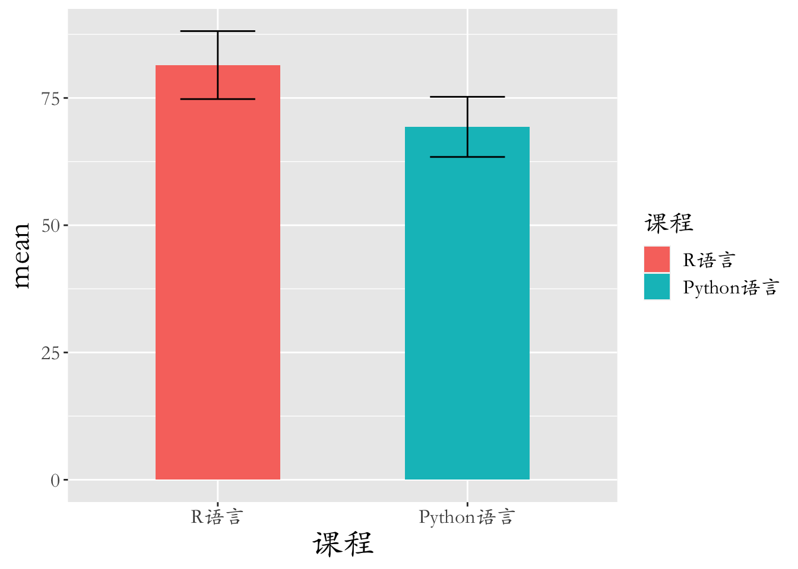
data2_1 %>% melt(id.vars = c("性别","专业"),
variable.name = "课程",
value.name = "分数") %>%
group_by(课程,性别) %>%
mutate(mean=mean(分数),
sd=sd(分数),
n=length(分数),
sem=sd(分数)/sqrt(n)) %>%
select(课程,性别,mean,sd) %>% unique() %>%
ggplot(aes(x=课程,y=mean,fill=性别))+
geom_bar(stat = "identity",
position = "dodge")+
geom_errorbar(aes(ymin = mean-sd,
ymax = mean+sd),
width = 0.3,
position = position_dodge(0.9))+
labs(y="平均成绩")+
guides(fill=guide_legend(title = NULL))+
mytheme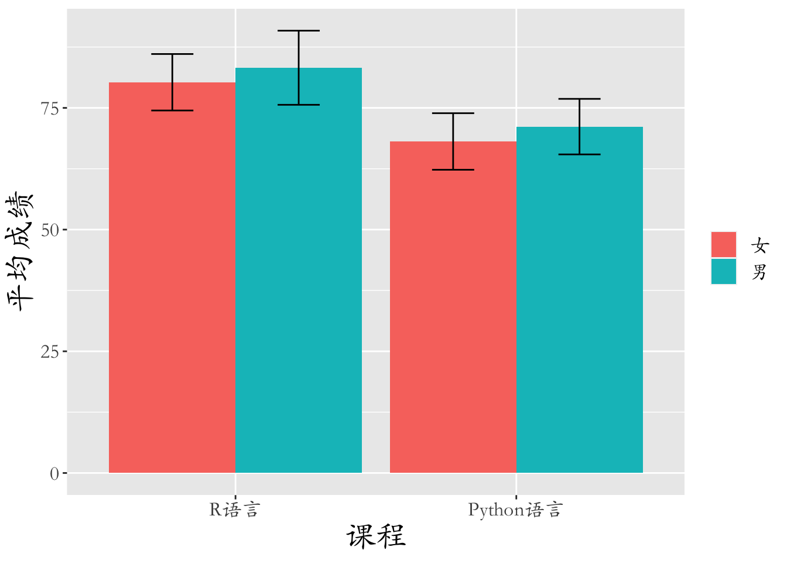
计算平均成绩
apply(data2_1[,3:4],2,mean) R语言 Python语言
81.46 69.32 mystats <- function(x) {
mean=mean(x)
sd=sd(x)
n=length(x)
sem=sd(x)/sqrt(n)
return(c(mean,sd,n,sem))
}apply(data2_1[,3:4],2,mystats) R语言 Python语言
[1,] 81.4600000 69.3200000
[2,] 6.6768256 5.9055145
[3,] 50.0000000 50.0000000
[4,] 0.9442457 0.8351659df5 <- as.data.frame(t(apply(data2_1[,3:4],2,mystats)))
colnames(df5) <- c("mean","sd","n","sem")
df5$课程 <- factor(rownames(df5))
head(df5) mean sd n sem 课程
R语言 81.46 6.676826 50 0.9442457 R语言
Python语言 69.32 5.905515 50 0.8351659 Python语言单变量极坐标图
ggplot(data3_1,aes(x=满意度,fill = 满意度))+
geom_bar()+
scale_fill_brewer(palette = "Reds")+
coord_polar()+mytheme 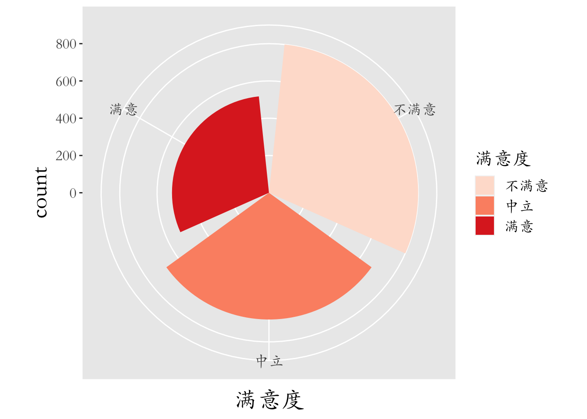
多变量极坐标图
ggplot(data3_1,aes(x=满意度,fill = 网购原因))+
geom_bar(width = 1)+
scale_fill_brewer(palette = "Reds",direction = -1)+
coord_polar()+mytheme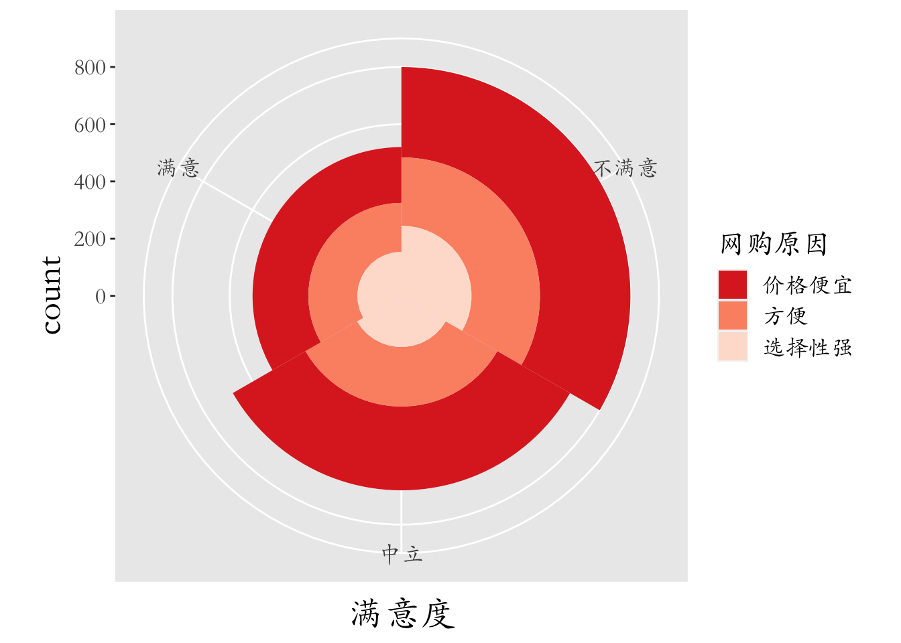
ggplot(df2,aes(x=支出项目,y=北京,fill=支出项目))+
geom_bar(stat = "identity")+
scale_fill_brewer(palette = "Spectral",direction = -1)+
coord_polar()+
ylim(-1000,18000)+
mytheme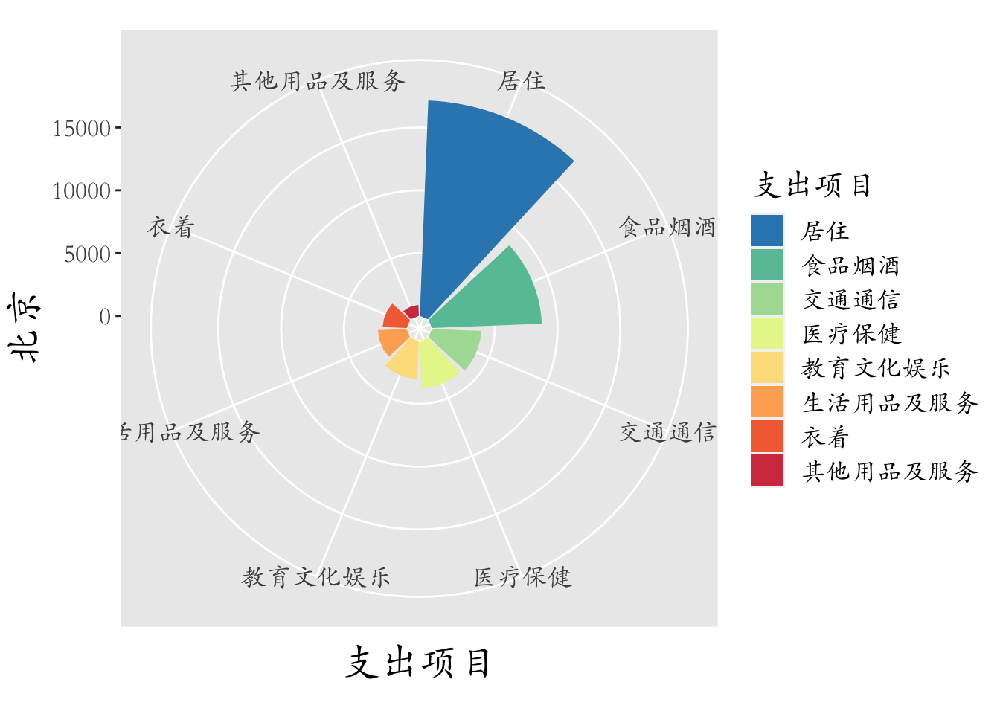
df3 <- data3_2 %>% select(支出项目,北京) %>% arrange(北京)
df3$支出项目 <- factor(df3$支出项目,ordered = T,
levels = df3$支出项目)
ggplot(df3,aes(x=支出项目,y=北京,fill=支出项目))+
geom_bar(stat = "identity")+
scale_fill_brewer(palette = "Spectral" )+
coord_polar(theta = "y",start = 0)+
ylim(0,20000)+
labs(y="支出金额")+mytheme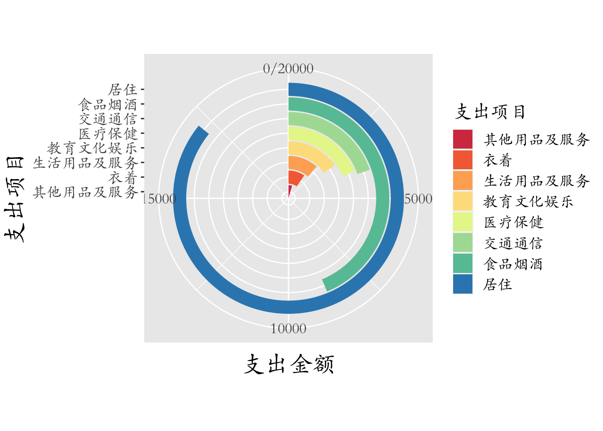
data3_2 %>% melt(id.vars = "支出项目",
variable.name = "地区",
value.name = "支出金额") %>%
ggplot(aes(x=支出项目,y=支出金额,fill=地区))+
geom_bar(stat = "identity")+
scale_fill_brewer(palette = "Reds",direction = -1)+
coord_polar()+mytheme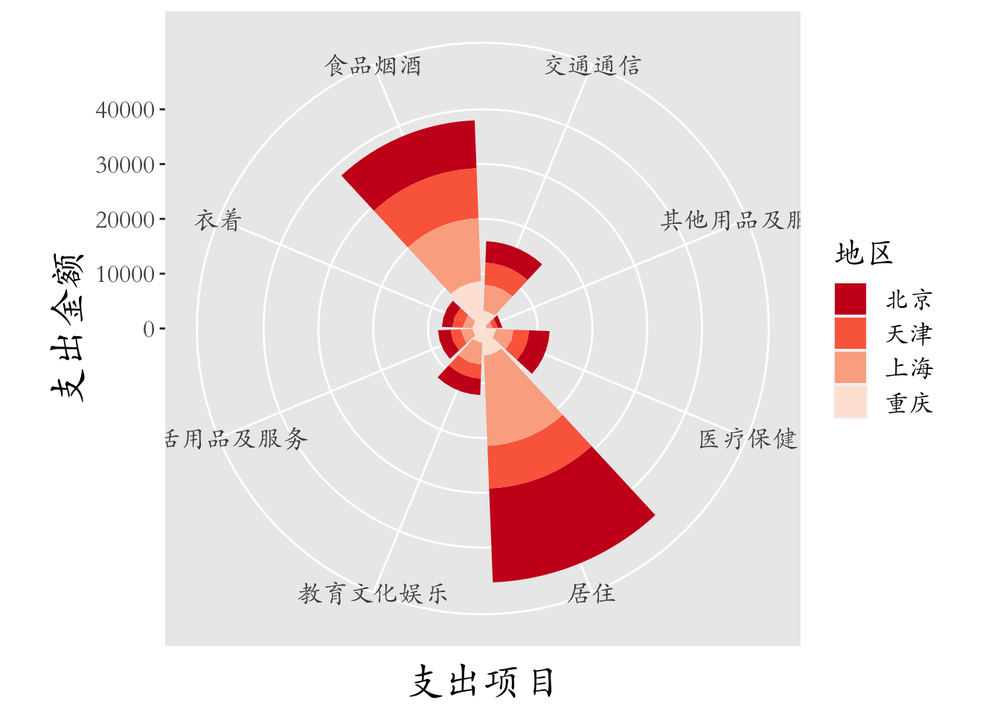
data3_1 %>% ftable() %>% as.data.frame() %>%
ggPie(aes(pies=满意度,count=Freq))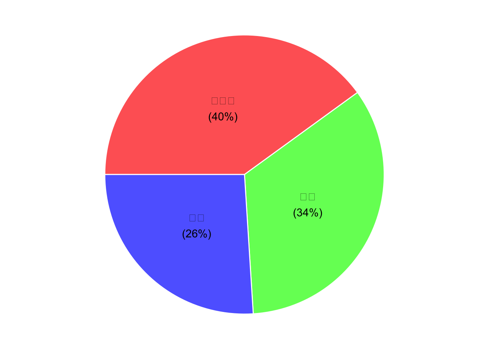